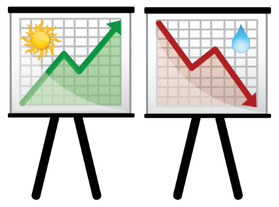

Chapter 4 Association between two features
So far, we have looked at various features in isolation. But what do we do if we want to analyze two features together? For example, to predict the unknown value of one feature (Sales) using a known value of the another feature (Weather conditions)?
In this chapter we will learn
how to form the joint distribution for two features,
how to modify this distribution if a certain value for one of the feature is already given \(\leadsto\) conditional distribution.
and how to infer empirical (in)dependence.
In addition, we will learn how to indicate the strength of the association by dependence measures.
Example 4.1 (Sales vs. Weather) Hypothesis: Your sales depend on the weather. The better the weather forecast, the more sales they believe you can make.

Your boss still needs data-based evidence. You have “scraped together” the following data from your colleagues’ assessments. How do you proceed?
| Day | Sales_Category | Weather_Conditions |
|---|---|---|
| 1 | moderate | bad |
| 2 | low | bad |
| 3 | moderate | bad |
| 4 | moderate | good |
| 5 | high | good |
| 6 | moderate | good |
| 7 | high | good |
| 8 | moderate | good |
| 9 | low | bad |
| 10 | low | good |
Consider the answers to the following questions:
- What values does the characteristic \(W\): Weather conditions attain? Which values are possible for the characteristic \(S\): Sales?
- How often do different combinations of the values of the two characteristics occur?
- Is it possible to say anything about the relationship between the two characteristics?
We are now dealing with the joint distribution of two characteristics \((X,Y)\). We have to adapt our previous approach to frequency distributions:
- The concept of frequency distribution is extended to frequency distributions for two features \(\leadsto\) joint frequency distributions.
- The previous frequency distributions for one characteristic are renamed \(\leadsto\) marginal frequency distributions.
- The frequency distribution of a characteristic for the case that the other characteristic assumes a certain value (condition) is introduced \(\leadsto\) conditional frequency distributions.
4.1 Frequency distribution for two features
Joint frequencies extend the previous frequency distribution to frequency distribution for two characteristics. Using a joint sample of the terms \(X\) and \(Y\) \((x_1,y_1),\ldots,(x_n,y_n)\), the values of \(X\) are determined as \(A_X=\{a_1,a_2,\ldots,a_J\}\) and the values of \(Y\) as \(B_Y=\{b_1,b_2,\ldots,b_K\}\).
4.1.1 Joint frequencies
- the absolute joint frequency \(H_{jk} = H(a_j,b_k)\) gives the number of pairs from the sample \((x_i,y_i)\) that correspond to the combination of the \((a_j,b_k)\) expressions.
- the relative joint frequency \(h_{jk} = h(a_j,b_k)\) gives the proportion of such pairs in the sample: \(h_{jk}=\frac{H_{jk}}n\).
- is the joint frequency distribution:
\[ \mathbb h_{XY} = \left(\begin{array}{cccc} h_{11}& h_{12}& \ldots&h_{1K}\\ \vdots&\vdots&\ldots&\vdots\\ h_{J1}&h_{J2}&\ldots&h_{JK} \end{array}\right) \]
or as a table:
\[ \begin{array}[t]{c|cccc|} \mathbb h_{XY}& b_1 & b_2 & \cdots & b_K \\\hline a_1 & h_{11} & h_{12} & \cdots & h_{1K} \\ a_2 & h_{21} & h_{22} & \cdots & h_{2K} \\ \vdots & \vdots & \vdots & & \vdots \\ a_J & h_{J1} & h_{J2} & \cdots & h_{JK}\\\hline \end{array} \]
Example 4.2 (Sales vs. Weather) Cont. of Example 4.1
We set up the joint distribution for the characteristics \(W=\) weather conditions and \(S=\) sales. First, we calculate the absolute frequencies:
\[ \begin{array}[t]{l|ccc|c} \mathbf H_{WS}& b_1=low & b_2=moderate &b_3=high&\\\hline a_1=bad & 2 & 2 & 0& \\ a_2=good & 1 & 3 & 2& \\\hline &&&& \end{array} \] The relative frequencies are:
\[ \begin{array}[t]{l|ccc|c} \mathbf h_{WS}& b_1=low & b_2=moderate &b_3=high&\mathbf h_W\\\hline a_1=bad & 0.2 & 0.2 & 0& \\ a_2=good & 0.1 & 0.3 & 0.2& \\\hline \mathbf h_S&&&& \end{array} \]
4.1.2 Marginal frequencies
The marginal frequencies are calculated from the joint frequencies as follows \[\begin{align*} H_{j\cdot} &= \sum_{k=1}^K H_{jk} = \text{absolute marginal frequency of }a_j\\ H_{\cdot k} &= \sum_{j=1}^J H_{jk} = \text{absolute marginal frequency of }b_k\\ h_{j\cdot} &= \sum_{k=1}^K h_{jk} = \text{relative marginal frequency of } a_j\\ h_{\cdot k} &= \sum_{j=1}^J h_{jk} = \text{relative marginal frequency of } b_k \end{align*}\]
The marginal relative frequencies constitute the marginal frequency distributions and are given by \[\begin{align*} \mathbf{h}_X&= \begin{pmatrix} h_{1\cdot} & h_{2\cdot} & \cdots & h_{J\cdot} \end{pmatrix} &\textbf{marginal relative frequency of } X\\ \mathbf{h}_Y&= \begin{pmatrix} h_{\cdot 1} & h_{\cdot 2} & \cdots & h_{\cdot K} \end{pmatrix} &\textbf{marginal relative frequency of } Y \end{align*}\]
Example 4.3 (Sales vs. Weather) Cont. of Example 4.2
We also calculate the marginal frequencies for the characteristics \(W=\) weather conditions and \(S=\) sales.
\[ \begin{array}[t]{l|ccc|c} \mathbf h_{WS}& b_1=low & b_2=moderate &b_3=high&\mathbf h_W\\\hline a_1=bad & 0.2 & 0.2 & 0& 0.4\\ a_2=good & 0.1 & 0.3 & 0.2&0.6 \\\hline \mathbf h_S&0.3&0.5&0.2&1 \end{array} \]
4.1.3 Contingency table
A contingency table is the joint representation of the joint frequencies and the marginal frequencies (referred to as \(H_X\) or \(h_X\) and \(H_Y\) or \(h_Y\)):
\[ \begin{array}[t]{c|cccc|c} \hline \mathbf H_{XY}& b_1 & b_2 & \cdots & b_K & \mathbf H_X\\\hline a_1 & H_{11} & H_{12} & \cdots & H_{1K} & H_{1\cdot}\\ a_2 & H_{21} & H_{22} & \cdots & H_{2K} & H_{2\cdot}\\ \vdots & \vdots & \vdots & & \vdots & \vdots\\ a_J & H_{J1} & H_{J2} & \cdots & H_{JK} & H_{J\cdot}\\\hline \mathbf H_Y & H_{\cdot 1} & H_{\cdot 2} & \cdots & H_{\cdot K} & n\\\hline \end{array} \qquad \begin{array}[t]{c|cccc|c} \hline \mathbf h_{XY}& b_1 & b_2 & \cdots & b_K & \mathbf h_X\\\hline a_1 & h_{11} & h_{12} & \cdots & h_{1K} & h_{1\cdot}\\ a_2 & h_{21} & h_{22} & \cdots & h_{2K} & h_{2\cdot}\\ \vdots & \vdots & \vdots & & \vdots & \vdots\\ a_J & h_{J1} & h_{J2} & \cdots & h_{JK} & h_{J\cdot}\\\hline \mathbf h_Y& h_{\cdot 1} & h_{\cdot 2} & \cdots & h_{\cdot K} & 1\\\hline \end{array} \]
Example 4.4 (Rating of corporate clients) We examine the relationship between the rating of customers and the actual situation at the end (default vs. no default).
Characteristics \(X\) and \(Y\) of a bank’s low-performing corporate customers:
- \(X\)=rating at the beginning of the period with the characteristics: \(B\)=weak, \(C\)=medium, \(D\)=severely low-performing.
- \(Y\)=situation at the end of the period with the values: \(D\)=default, \(N\)=no default.
Joint frequency distribution:
\[ \begin{array}[t]{c|cc|c} \mathbf{h}_{XY} & Y=D & Y=nD & \mathbf{h}_X\\\hline X=B & 0.05 & 0.45 & \\ \phantom{X=}C & 0.04 & 0.16 & \\ \phantom{X=}D & 0.21 & 0.09 & \\\hline \mathbf{h}_Y & && \end{array} \]
\(h_{1,1} = 0.05\) (the joint relative frequency of \(X=B\) and \(Y=D\)) means that 5% of the customers initially received the rating \(B\) and defaulted at the end of the period. \(h_{1,2} = 0.16\) means that 16% of the customers initially received the rating \(C\) and did not report a default at the end of the period. \(h_{3,1} = 0.21\) means that 21% of the customers initially received the rating \(D\) and defaulted at the end of the period.
- Marginal frequency distributions:
\[ \mathbf{h}_X = \begin{bmatrix} B & C & D\\ 0.5 & 0.2 & 0.3 \end{bmatrix}~~~~ \mathbf{h}_Y = \begin{bmatrix} D & nD\\ 0.3 & 0.7 \end{bmatrix} \]
\(h_{2,\cdot}=0.2 = h_{X=C}\) (the marginal frequency of \(X=C\)) means that 20% of the customers were rated C. \(h_{\cdot,1}=0.3 = h_{Y=D}\) (the marginal frequency of \(Y=D\)) means that 30% of the customers had defaulted at the end of the period.
4.2 Conditional frequency distribution
Absolute or relative frequencies do not directly indicate a relationship between two characteristics.
Conditional frequencies are frequencies of a characteristic if the expression of the other characteristic is fixed (i.e. known).
Example 4.5 (Sales vs. Weather) Cont. of Example 4.1.
Now you have received some more concrete data from BI…What is the distribution of sales when the outside temperature is over 20 degrees?
\[ \begin{array}{r|ccc|c} \hline \mathbf h_{TS}& S\in\text{[10,20)} & \text{[20,30)} & \text{[30,40]} & \mathbf h_T \\\hline T\in\text{[10,15)} & 0.2 & 0.1 & 0.05 & 0.35\\ \text{[15,20)} & 0.1 & 0.25 & 0.05 & 0.4\\ \text{[20,25]}& 0 & 0.05 & 0.20 & 0.25\\\hline \mathbf h_S & 0.30 & 0.40 & 0.30 & 0.10\\\hline \end{array} \]
For a joint frequency distribution of the characteristics \(X\) and \(Y\) \(\textbf{h}_{XY}\) we calculate:
- the relative conditional frequency of \(X=a_j\) given \(Y=b_k\) as
\[ h_{j|k} = h(X=a_j|Y=b_k) = \frac{h_{jk}} {h_{\cdot k}}, \quad\text{ also } h_{j|k} = \frac{H_{jk}}{H_{\cdot k}}, \]
- the relative conditional frequency of \(Y=b_k\) given \(X=a_j\) as
\[ h_{k|j} = h(Y=b_k|X=a_j) = \frac{h_{jk}} {h_{j\cdot}}, \quad\text{ also } h_{k|j} = \frac{H_{jk}}{H_{j\cdot}}. \]
- The conditional frequency distribution of \(X\) given \(Y=b_k\) is
\[ \mathbf{h}_{X|Y=b_k} = \begin{pmatrix} h_{1|k} & \cdots & h_{J|k} \end{pmatrix}. \]
- The conditional frequency distribution of \(Y\) given \(X=a_j\) is
\[ \mathbf{h}_{Y|X=a_j}= \begin{pmatrix} h_{1|j}&\cdots & h_{K|j} \end{pmatrix}. \]
Example 4.6 (Rating of corporate clients) Cont. of Example 4.4.
- Joint frequency distribution:
\[ \begin{array}[t]{c|cc|c} \mathbf{h}_{XY} & Y=D & Y=nD & \mathbf{h}_X\\\hline X=B & 0.05 & 0.45 & 0.5\\ \phantom{X=}C & 0.04 & 0.16 & 0.2\\ \phantom{X=}D & 0.21 & 0.09 & 0.3\\\hline \mathbf{h}_Y & 0.3&0.7& 1 \end{array} \]
- Conditional frequencies:
\[ h_{B|D} = h(X=B|Y=D) = \frac{h_{BD}}{h_{\cdot D}} = \frac{0.05}{0.3} = 0.1667 \] Interpretation: \(h_{B|D}=0.1667\) means that among the corporate customers who defaulted at the end of the period, \(16.67\%\) were initially given rating B.
\[ h_{D|B} = h(Y=D|X=B) = \frac{h_{BD}}{h_{B\cdot}} = \frac{0.05}{0.5} = 0.1 \] Interpretation: \(h_{D|B}=0.1\) means that \(10\%\) of the corporate customers with rating B defaulted at the end of the period. Note: \(h_{BD}=0.05\) means that \(5\%\) of the considered corporate customers were rated as B and eventually defaulted.
- Conditional frequency distribution of \(X\) given \(Y=nD\):
\[ \mathbf{h}_{X|Y=nD} = \begin{pmatrix} h_{B|nD} & h_{C|nD} & h_{D|nD} \end{pmatrix} = \begin{pmatrix} 0.6428 & 0.2286 & 0.1286 \end{pmatrix} \]
- Conditional frequency distribution of \(Y\) given \(X=D\):
\[ \mathbf{h}_{Y|X=D} = \begin{pmatrix} h_{Y=D|X=D} & h_{Y=nD|X=D} \end{pmatrix} = \begin{pmatrix} 0.7 & 0.3 \end{pmatrix} \]
4.3 Empirical independence
Two features \(X\) and \(Y\) are empirically independent if \(Y\) has no influence on \(X\) and vice versa. In relation to the conditional frequencies, this means that the conditional frequencies of \(X\) given \(Y=b_k\) are equal to the corresponding marginal frequencies of \(X\) for all \(k=1,\ldots, K\). Analogously for \(Y\) given \(X=a_j\).
\[\begin{align} h_{X=a_j|Y=b_1}&=\cdots=h_{X=a_j|Y=b_K}=h_{j\cdot}, ~~\text{ for all }j=1,\ldots, J\\ h_{Y=b_k|X=a_1}&=\cdots=h_{Y=b_k|X=a_J}=h_{\cdot k}, ~~ \text{ for all } k=1, \ldots, K \end{align}\]
- If there is no risk of misinterpretation, we write \(h_{j|k}\) instead of \(h_{X=a_j|Y=b_k}\).
Definition 4.1 (Empirical independence criterion) \[\begin{align*} & X\text{ and } Y \text{ are independent}\\ \iff & h_{jk} = h_{j\cdot} \cdot h_{\cdot k} ~~ \text{ for all} j=1,\ldots, J\text{ and } k=1,\ldots,K\\ \iff & \mathbf{h}_{XY} = \mathbf{h}_X^T\cdot \mathbf{h}_Y \end{align*}\]
Example 4.7 (Rating of corporate clients) Because \(h_{X=B,Y=D}=0.05\not= 0.5\cdot 0.3=h_{X=B}\cdot h_{X=D}\), the characteristics characteristics \(X=\text{rating}\) and \(Y=\text{default}\) are not independent = dependent.
Example 4.8 (Grades and Fitness)
For the mathematics results of a year group, the following characteristics are of interest \[\begin{align*} X&= \text{degree of fitness with the values } a \text{ (=athletic)}, u \text{ (=unathletic)},\\ Y&= \text{grade with the values } A,B,C,D. \end{align*}\] The evaluation of a year leads to the following empirical distribution:
\[ \begin{array}[t]{c|cccc|c} \mathbf{h}_{XY} & Y=A & B & C & D & \mathbf{h}_X\\\hline X=a & 0.06 & 0.18 & 0.24 & 0.12 & 0.6\\ \phantom{X=}u & 0.04 & 0.12 & 0.16 & 0.08 & 0.4\\\hline \mathbf{h}_Y & 0.1 & 0.3 & 0.4 & 0.2 & 1 \end{array} \]
Since \(\mathbf{h}_X^T\cdot \mathbf{h}_Y=\mathbf{h}_{XY}\), \(X\) and \(Y\) are empirically independent.
Exercise 4.1 (Frequencies for two features.)
4.4 Dependence measures
Measures for the relationship between two characteristics give us a value that quantifies the strength of the relationship (and in the case of correlation also the direction).
The concrete type of dependence measures is chosen based on:
the scale of the characteristics \(X\) and \(Y\)
- metric: Empirical correlation coefficient \(\rho_{XY}\)
- ordinal: rank correlation \(\rho_{XY}^S\)
- nominal: normalized contingency coefficient and chi-square coefficient \(C^*,\chi^2\)
the data representation:
- Sample: \((x_1,y_1), (x_2,y_2), \ldots, (x_n,y_n)\)
- Frequency distribution:\(\mathbf{h}_{XY}\)
4.4.1 Empirical covariance and correlation
Metrically scaled characteristics carry information about both the direction of change (>,<) and the amount of change. Therefore, the idea here is to see whether and to what extent they move in the same direction (compared to the characteristic-related mean value).
Example 4.9 (Sales vs. Weather) Cont. of Example 4.1.
If you get more detailed information from BI, such as:
| Day | Sales | Temperature |
|---|---|---|
| 1 | 24.2 | 13.57 |
| 2 | 20.36 | 14.77 |
| 3 | 25.18 | 14.2 |
| 4 | 25.94 | 17.65 |
| 5 | 31.18 | 24.79 |
| 6 | 24.83 | 15.85 |
| 7 | 30.17 | 23.58 |
| 8 | 26.92 | 19.3 |
| 9 | 19.36 | 10.67 |
| 10 | 23.24 | 17.35 |
How can we then assess the direction and strength of the dependence between sales and temperature?
Definition 4.2 (Covariance and Correlation) For a sample \((x_1,y_1), \ldots, (x_n,y_n)\) of the metrically scaled characteristics \(X\) and \(Y\), the sample covariance is calculated as
\[ \hat\sigma_{XY} = \frac{1}{n-1} \sum_{i=1}^n (x_i-\bar x) (y_i-\bar y) = \frac{1}{n-1} \sum_{i=1}^n x_i y_i - \frac{n}{n-1} \bar x \bar y. \]
- The empirical correlation coefficient is defined by
\[ \hat\rho_{XY} = \frac{\hat\sigma_{XY}} {\hat\sigma_X \hat\sigma_Y}=\frac{\sum_{i=1}^n x_i y_i - n\bar x \bar y} {\sqrt{\sum_{i=1}^n x_i^2 - n \bar x^2} \cdot \sqrt{\sum_{i=1}^n y_i^2 - n \bar y^2}}. \]
- Interpretation: \(\hat\sigma_{XY}\) and \(\hat\rho_{XY}\) are measures for the linear association between two characteristics \(X\) and \(Y\).
The units of covariance correspond to the product of the units of the underlying characteristics; the level of covariance can be difficult to interpret.
Graphical representation: Scatterplot (scatter diagram). The representation of the sample pairs \((x_1,y_1), \ldots,(x_n,y_n)\) as points in an \(x\)-\(y\) coordinate system is called a scatterplot.
Choose \(\rho_{XY}\):
Example 4.10 (Sales vs. Weather) Cont. of Example 4.9.
We calculate correlation for:
- Sample (\(n=10\))
| Day | Sales | Temperature |
|---|---|---|
| 1 | 24.2 | 13.57 |
| 2 | 20.36 | 14.77 |
| 3 | 25.18 | 14.2 |
| 4 | 25.94 | 17.65 |
| 5 | 31.18 | 24.79 |
| 6 | 24.83 | 15.85 |
| 7 | 30.17 | 23.58 |
| 8 | 26.92 | 19.3 |
| 9 | 19.36 | 10.67 |
| 10 | 23.24 | 17.35 |
Calculation of the empirical correlation coefficient \(\hat\rho_{TS}\).
The sample means: \[\begin{align*} \bar t&= \frac{1}{10} (13.57 + \cdots + 17.35) = 17.173\text{ °C}\\ \bar s&= \frac{1}{10} (24.2 + \cdots + 23.24) = 25.138\text{ Monetary Untits (MU)} \end{align*}\]
The sample variances: \[\begin{align*} \hat\sigma_T^2 &= \frac{1}{9} (13.57^2 + \cdots + 17.35^2 - 10\cdot 17.17^2) = 19.4984\text{ °C}^2\\ \hat\sigma_S^2 &= \frac{1}{9} (24.2^2 + \cdots + 23.24^2 - 10\cdot 25.14^2) = 14.0488\text{ MU}^2 \end{align*}\]
The sample covariance: \[ \hat\sigma_{TS} = \frac{1}{10-1} (13.57\cdot 24.2 + \cdots + 17.35\cdot23.24) - \frac{10}{10-1}\cdot17.17\cdot 25.14 \\ = 14.9797~\text{ °C}\cdot\text{ MU} \]
The correlation coefficient is thus calculated as: \[ \hat\rho_{TS} = \frac{14.9797}{\sqrt{19.4984\cdot 14.0488}} = 0.905 \]
The characteristics are therefore clearly positively correlated.
Exercise 4.2 (Correlation) Compute the correlation between two characteristics \(X\), change in 6-month EURIBOR (It determines the price at which banks lend money to each other over a six-month period), and \(Y\), change in 10-year swap rate (the fixed interest rate that the receiver demands in exchange for the uncertainty of having to pay the floating rate over time).
- For a given frequency distribution \(\textbf{h}_{XY}\) from the sample \((x_1,y_1), \ldots,(x_n,y_n)\).
The empirical covariance is given by \[\begin{align*} \hat\sigma_{XY} &= \frac{1}{n-1} \sum_{j=1}^J \sum_{k=1}^K (a_j-\bar x) (b_k-\bar y) H_{jk} = \frac{1}{n-1} \sum_{j=1}^J \sum_{k=1}^K a_j b_k H_{jk} - \frac{n}{n-1}\, \bar x\, \bar y \\ &= \frac{n}{n-1} \sum_{j=1}^J \sum_{k=1}^K a_j b_k h_{jk} - \frac{n}{n-1} \bar x\, \bar y. \end{align*}\]
The empirical correlation coefficient is given by
\[ \hat\rho_{XY} = \frac{\hat\sigma_{XY}}{\hat\sigma_{X}\hat\sigma_{Y}}=\frac{\sum_{j=1}^J \sum_{k=1}^K a_j b_k h_{jk} \!-\! \bar x\cdot \bar y} {\sqrt{\sum_{j=1}^J a_j^2 h_{j\cdot} \!-\! \bar x^2} \sqrt{\sum_{k=1}^K b_k^2 h_{\cdot k} \!-\! \bar y^2}} \]
Example 4.11 (Frequencies of U and T) We compute the correlation based on the frequency distribution:
\[ \begin{array}{r|ccc|c} \hline \mathbf h_{TS}& S\in\text{[10,20)} & \text{[20,30)} & \text{[30,40]} & \mathbf h_T \\\hline T\in\text{[10,15)} & 0.20 & 0.10 & 0.05 & 0.35\\ \text{[15,20)} & 0.10 & 0.25 & 0.05 & 0.40\\ \text{[20,25]}& 0.00 & 0.05 & 0.20 & 0.25\\\hline \mathbf h_S & 0.30 & 0.40 & 0.30 & 1\\\hline \end{array} \]
Characteristics: \(T~ (Temperature); ~~S~ (Sales)\), \(n=100\).
Class means:
\[ \begin{array}[t]{lr} a_1=12.5, \quad a_2=17.5, \quad a_3=22.5&~(Temperature)\\ b_1=15, \quad b_2=25, \quad b_3=35 &~(Sales) \end{array} \]
- Sample means:
\[\begin{align*} \hat \mu_T &= 12.5\cdot 0.35 + 17.5\cdot 0.4 + 22.5\cdot 0.25 = 17\\ \hat \mu_S &= 15\cdot 0.3 + 25\cdot 0.4 + 35\cdot 0.3 =25. \end{align*}\]
- Sample variance and covariance:
\[\begin{align*} \hat\sigma_T^2 &= \frac{100}{100-1} (12.5^2\cdot 0.35 + 17.5^2\cdot 0.4 + 22.5^2\cdot 0.25 - 17^2) = 14.899,\\ \hat\sigma_S^2 &= \frac{100}{100-1} (15^2\cdot 0.3 + 25^2\cdot 0.4 + 35^2\cdot 0.3 - 25^2) = 60.6061,\\ \hat\sigma_{TS} &= \frac{100}{100-1} (12.5\cdot 15\cdot 0.2 + 12.5\cdot 25\cdot 0.1 + 12.5\cdot 35\cdot 0.05+\ldots +\\ &~+17.5\cdot 15\cdot 0.1+\ldots + 22.5\cdot 35\cdot 0.2 - 17\cdot 25) = 17.6768. \end{align*}\]
- Correlation: \(\hat\rho_{TS} = \frac{17.6768} {\sqrt{14.899}\cdot \sqrt{60.6061}} =0.5883.\)
4.4.2 Rank correlation
If the characteristics are at least on the ordinal scale, an empirical correlation coefficient can be calculated from the ranks of the sample values.
Given a sample \(x_1, \ldots, x_n\) of a characteristic on at least on the ordinal scale and an ordered sample \(x_{[1]} \leq x_{[2]} \leq \cdots\leq x_{[n]}\), the rank correlation is calculated from the corresponding ranks, which are defined as:
If all values of the sample are different: If \(x_i=x_{[k]}\), then the rank of \(x_i\) is defined as \(R(x_i)=k\).
If some values occur more than once, the rank is defined as the arithmetic mean of the possible ranks.
Example 4.12 (Determining the rank) \[ \begin{array}{cccccc} \hline \text{customer}& 1&2&3&4&5\\ \text{rating}& A&C&B&C&C\\ \text{possible rank}&1&3&2&4&5\\\hline \text{resulting rank}&1&4&2&4&4\\\hline \end{array} \]
Since rank(\(C\))\(=\frac 13(3+4+5) =4\).
Rank correlation /Spearman’s Rho
For a sample \((x_1,y_1), \ldots, (x_n,y_n)\) of ordinal or metrically scaled characteristics \(X\) and \(Y\), the associated ranks \(R(x_1), \ldots, R(x_n)\) and \(R(y_1),\ldots, R(y_n)\) are first assigned the ranks.
Definition 4.3 (Rank correlation) The rank correlation coefficient/Spearman’s Rho is based on the classic correlation coefficient and replaces the sample values with the corresponding ranks:
\[ \hat\rho_{XY}^S = \frac{\sum_{i=1}^n R(x_i) R(y_i) - n\cdot \overline{R(x)}\cdot \overline{R(y)}} {\sqrt{\sum_{i=1}^n R(x_i)^2 - n\cdot \overline{R(x)}^2} \sqrt{\sum_{i=1}^n R(y_i)^2 - n\cdot \overline{R(y)}^2}}. \]
- Special case: If both the sample values \(x_1,\ldots, x_n\) and \(y_1, \ldots, y_n\) are different, the following applies
\[ \hat\rho_{XY}^S = 1-\frac{6\sum_{i=1}^n d_i^2}{n(n^2-1)}\quad\text{ mit } d_i=R(x_i)-R(y_i). \] This formula can also be used as an approximation.
Example 4.13 (Comparison of two rating procedures: (1) and (2))
- rating classes (best-to-worst): \(AAA\), \(AA\), \(A\), \(BBB\), \(BB\), \(B\), \(CCC\), \(CC\), \(C\), \(D\)
\[ \begin{array}[t]{cccccccccccc} \hline \text{Client} & 1 & 2 & 3 & 4 & 5 & 6 & 7 & 8 & 9 & 10\\\hline x_i\text{ with (1)} & B & A & CC & BB & CC & D & C & A & AA & BBB\\ R(x_i) & 6 & 2.5 & 7.5 & 5 & 7.5 & 10 & 9 & 2.5 & 1 & 4\\\hline y_i \text{ with (2)} & BB & A & BBB & B & CC & CC & CCC & AA & A & BB\\ R(y_i) & 5.5 & 2.5 & 4 & 7 & 9.5 & 9.5 & 8 & 1 & 2.5 & 5.5\\\hline d_i & 0.5 & 0 & 3.5 & -2 & -2 & 0.5 & 1 & 1.5 & -1.5 & -1.5\\\hline \end{array} \]
- rank correlation:
\[ \hat\rho_{XY}^S = 0.8246 \]
- \(\displaystyle\hat\rho_{XY}^S \approx 1-\frac{6\cdot28.5}{10\cdot 99}=0.8272\) results from the approximation.
Exercise 4.3 (Rank correlation)
4.4.3 Contingency based measures: \(\chi^2\) coefficient, contingency coefficient, normalized contingency coefficient
If characteristics are measured on the nominal scale, a measure of the correlation cannot be determined on the basis of the values. Instead, a measure is derived from the frequencies and quantifies the distance to the case of independence.
First, the sum of the squared and normalized deviations of the observed frequencies from the frequencies constructed under the assumption of independence is calculated (\(\leadsto\) \(\chi^2\) coefficient).
Since the size of the \(\chi^2\) coefficient depends on the sample size \(n\), it is normalized (\(\leadsto\) contingency coefficient \(C\)). The resulting contingency coefficient is free of the influence of \(n\).
Since \(C\) still depends on the number of values of the individual characteristics, it must be modified again. (\(\leadsto\) normalized contingency coefficient \(C^*\)).
The normalized contingency coefficient then always moves in the interval \([0;1]\), whereby \(C^*=0\) determines empirical independence and \(C^*=1\) a perfect correlation between the characteristics.
Definition 4.4 (Contigency measures)
- \(\chi^2\) measures the quadratic deviation from independence:
\[ \chi^2 = n\sum_{j=1}^J \sum_{k=1}^K \frac{\left(h_{jk} - h_{j\cdot}h_{\cdot k}\right)^2} {h_{j\cdot} h_{\cdot k}}, \]
The contingency coefficient is defined as: \[ C = \sqrt{\frac{\chi^2}{n+\chi^2}}, \] and assumes a value \(C\in \left[0,\sqrt{\frac{M-1}{M}}\right]\) with \(M=\min(J,K)\).
The normalized contingency coefficient is given by:
\[ C^\ast = C/\sqrt{\frac{M-1}{M}} \] and has a value \(C^\ast\in [0,1]\).
Example 4.14 (Grades and Fitness)
- The basic population of HWR students is available for the following characteristics: \(A=\text{level of fitness}\) with the values \(s=\text{athletic}\) and \(u=\text{unathletic}\) and \(B=\text{exam grade}\) with the values \(e=\text{excellent}\), \(g=\text{good}\) and \(s=\text{sufficient}\) a sample with a size of \(n=200\) with frequency distribution:
\[ \begin{array}[t]{c|ccc|c} h_{j,k} & b_1=e & b_2=g & b_3=s & h_{j\cdot}\\\hline a_1=s & 0.07 & 0.36 & 0.17 & 0.6\\ a_2=u & 0.06 & 0.275 & 0.065 & 0.4\\\hline h_{\cdot k} & 0.13 & 0.635 & 0.235 & 1\\\hline \end{array} \]
- the frequencies under independence would be:
\[ \begin{array}[t]{c|ccc} h_{j,\cdot}\cdot h_{\cdot,k} & b_1 & b_2 & b_3 \\\hline a_1 & 0.078 & 0.381 & 0.141\\ a_2 & 0.052 & 0.254 & 0.094\\\hline \end{array} \]
We use this to calculate: \[\begin{align*} \chi^2 &= n\cdot\frac{(0.07-0.078)^2}{0.078} + \frac{(0.36-0.381)^2}{0.381} + \cdots + \frac{(0.065-0.094)^2}{0.094} = 3.9713 \\ C&= \sqrt{\frac{\chi^2}{\chi^2+n}} = 0.1395 \in [0;0.7071];\quad C^\ast = 0.1973\in [0.1]. \end{align*}\] This value indicates a slight dependency.
Exercise 4.4 (Contingency coefficient)